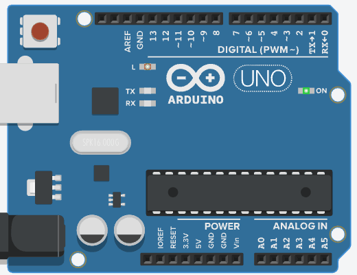

Hoy montamos el taller completo, paso a paso…
¡y le das tu primera orden a un Arduino de verdad!
Paso 1 · Conocer la herramienta
Así como un carpintero tiene su taller 🪚,
un programador tiene su IDE: el taller donde fabrica programas.
Aquí escribes las instrucciones de tu programa (el sketch).
El IDE lee tu programa y te avisa si algo está mal escrito.
Con un clic, tu programa viaja por el cable hasta el cerebrito.
Paso 2 · Montar el taller
Toca el 📷 de cada paso para ver cómo se ve en pantalla. En el taller ya está instalado: este paso a paso es para hacerlo en tu casa 🏠
Paso 3 · El traductor
Windows no nació sabiendo hablar con Arduino. El driver es el traductor que se lo enseña. Durante la instalación, aparece una ventana como esta… ¡y hay que decirle que sí!
¿Desea instalar este software de dispositivo?
Nombre: Arduino USB Driver
Editor: Arduino LLC
Esto pasa mientras se instala el IDE, con el Arduino todavía desenchufado: así, cuando lo conectes, Windows ya sabrá quién es. (Tu placa usa otro traductor, el CH340: si Windows no lo instala solo, avísale al profe.)
Traductor listo ✅ … ¡ahora sí, conectemos el cable USB! 🔌
Paso 4 · Conocer al cerebrito
💡 Cada parte tiene un superpoder.
Paso 4 · Tu placa del kit
💡 Es azul y se ve distinta… pero piensa igualito.
Paso 5 · ¡A conectar!
Paso 6 · La prueba de fuego
// Tu programa va a aparecer aquí…En el IDE de verdad se ve así: la placa y su puerto COM , el botón de subir y el mensaje de éxito
Paso 6 · ¿Qué dice tu programa?
// Blink: prende y apaga el LED de la placavoid setup() { pinMode(LED_BUILTIN, OUTPUT);} void loop() { digitalWrite(LED_BUILTIN, HIGH); delay(1000); digitalWrite(LED_BUILTIN, LOW); delay(1000);}Programa completo: sketches/sesion-02/blink.
Patio de juegos
delay(500); // 0,5 segundos
⭐ Reto de la sesión
Un corazón no parpadea parejo: hace tum-tum… pausa… tum-tum… pausa.
Pista: necesitas varios delay con números distintos.
Así debería verse:
Duelo de cerebritos
delay(500)?Lo lograste
Hoy montaste el taller completo: IDE, drivers, placa conectada,
tu primer Blink de verdad… ¡y tu laboratorio virtual para la casa!
La electricidad es como el agua… y la protoboard será tu nueva mejor amiga. ¡Armaremos circuitos propios, con cables de verdad!
Extra · Tu laboratorio en casa
¡No hay problema! Tinkercad es un laboratorio virtual gratis: tiene Arduinos infinitos y nada se puede quemar.

Extra · Paso a paso en Tinkercad
Tinkercad guarda solo: no hay que apretar ningún botón de guardar. 💾
Extra · Paso a paso en Tinkercad
Prueba cambiar los 1000 por otros números y vuelve a simular. 🎛️
Extra · Programando en Tinkercad
Los bloques se leen de arriba hacia abajo…
y al terminar, vuelven a empezar. 🔁 ¿Te suena? ¡Es el loop!
En un circuito nuevo, el panel Código de Tinkercad parte en bloques y ya trae este Blink armado
Extra · El secreto de los bloques
digitalWrite(LED_BUILTIN, HIGH); delay(1000);
En Tinkercad, elige la vista «Bloques + Texto» para ver los dos a la vez.
¿Reconoces el código? ¡Es el mismo del Blink que subiste a tu placa! 💪